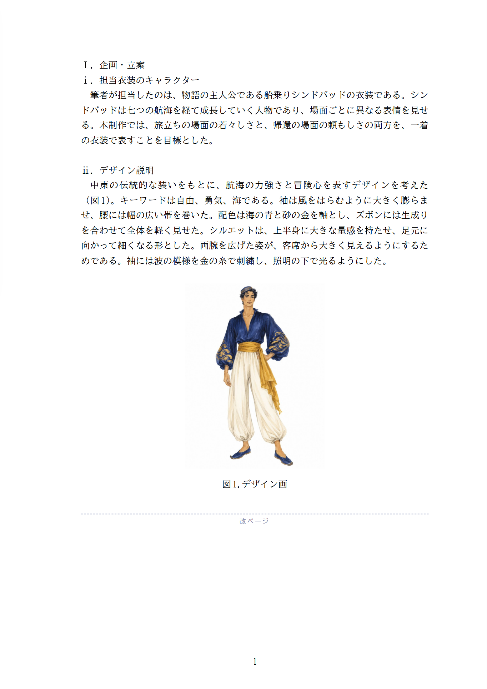
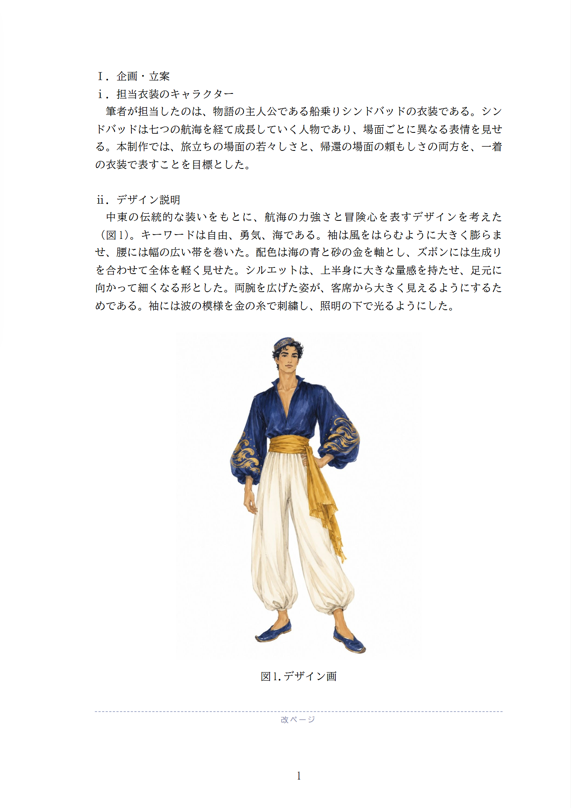
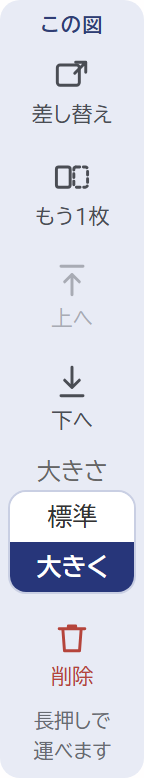

図の大きさは、いまは自動です（長い辺が8cm）。ふつうのページは、後ろの文が流れ込んで下まで埋まります。空きが残るのは、図のすぐ後ろが改ページや章の終わりで、文が流れ込めない所だけです。
改ページの前は、下に空きが残ります

空いた分だけ大きくします（いちばん大きくて1.5倍。長い辺が12cm）。学生は何もしません

図を押すと、左の道具で選べます。ふつうのページで大きくすると、後ろの文が次のページへ押し出されます

案B は、図のすぐ後ろが改ページか章の終わりで、下に空きがあるときだけ大きくします。ほかの所の図は今までどおりです。
文を書き足して空きが減れば、図も元の大きさに近づきます。2枚並びの図も同じです（本文の幅まで）。
案C は、スマホの図の道具の帯がいっぱいのため、「大きさ」は別の所に置くことになります。